Chapter 2 Introduction to Linear Models
2.1 Models with a Categorical Explanatory Variable
2.1.1 Models with a Categorical Explanatory Variable
Learning outcomes:
- Fit model with categorical variables using R.
- Interpret model coefficients.
- Make predictions.
- Calculate proportion of variation explained by model.
We'll work with a set of 10 houses sold in Ames, IA between 2006 and 2010.
2.1.2 Variation in Ames IA, House Prices
Shown below are the prices of 10 houses sold in Ames, IA between 2006 and 2010.
## [1] 123.00 187.00 176.50 113.00 163.99 110.00 84.90 150.00 235.00 137.00
2.1.3 Predicting Price of New House
Shown below are the prices of 10 houses sold in Ames, IA between 2006 and 2010.
## [1] 123.00 187.00 176.50 113.00 163.99 110.00 84.90 150.00 235.00 137.00
Suppose we want to predict the price of a new house, that was sold in this time period. (note that new means a house not among the original 10, rather than a newly-built house.)
Using the information available the best we can do is to use the sample mean for our prediction.
mean(Houses$SalePrice)## [1] 148.0392.1.4 A Very Simple Model
- If we have the prices of \(n\) houses, \(y_i, y_2, \ldots, y_n\), and want to predict the price of a new house, we use the model:
\[ \widehat{\text{Price}} = \bar{y}, \text{where } \bar{y}=\frac{\displaystyle\sum_{i=1}^ny_i}{n}\].
- The symbol \(\widehat{\text{Price}}\), represents the predicted, or expected, price.
2.1.5 Simple Model in R
M0 <- lm(data=Houses, SalePrice~1)
summary(M0)##
## Call:
## lm(formula = SalePrice ~ 1, data = Houses)
##
## Residuals:
## Min 1Q Median 3Q Max
## -63.139 -32.539 -4.539 25.334 86.961
##
## Coefficients:
## Estimate Std. Error t value Pr(>|t|)
## (Intercept) 148.04 13.97 10.6 0.0000022 ***
## ---
## Signif. codes: 0 '***' 0.001 '**' 0.01 '*' 0.05 '.' 0.1 ' ' 1
##
## Residual standard error: 44.17 on 9 degrees of freedom2.1.6 Quantifying Total Variability in Prices
Although the mean price represents our best prediction, we certainly shouldn't expect the price of the new house to exactly match the mean of the original 10. There is considerable variability between house prices.
We can get a sense of how much variability we should expect in our prediction by looking at how much the values in our dataset differ from the predicted (mean) price.
\(\displaystyle\sum_{i=1}^n (y_i - \bar{y})=0\), so this is not a helpful measure.
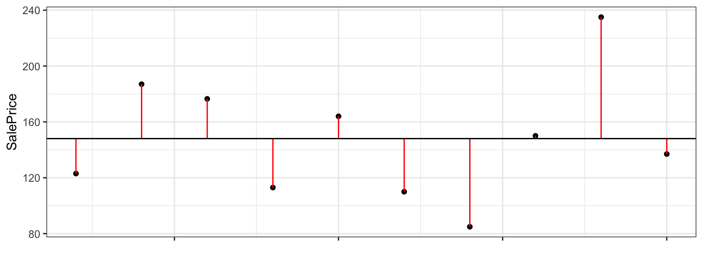
2.1.7 Total Sum of Squares
We'll measure total variability in price, using :
\[ \displaystyle\sum_{i=1}^n (y_i - \bar{y})^2 \]
We'll call this the total sum of squares, and abbreviate it SST.
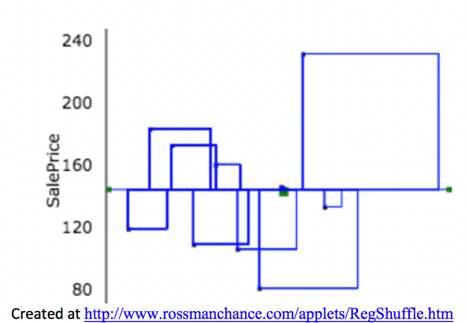
2.1.8 Total Variation Calculations in Simple Model
- Calculate \(\displaystyle\sum_{i=1}^n (y_i - \bar{y})\) in R.
sum(Houses$SalePrice - mean(Houses$SalePrice))## [1] 0.0000000000001421085- Calculate \(SST = \displaystyle\sum_{i=1}^n (y_i - \bar{y})^2\) in R.
sum((Houses$SalePrice - mean(Houses$SalePrice))^2)## [1] 17558.522.1.9 Adding Information about Neighborhood
Now, suppose we know the neighborhood of each house. We can use this information to improve our predictions.
The prediction for a new house is given by the average price in that neighborhood.

| Neighborhood | AveragePrice |
|---|---|
| CollgCr | 195.3300 |
| Edwards | 102.6333 |
| NAmes | 146.6250 |
2.1.10 Explanatory and Response Variables
The variable we are trying to predict (price) is called the response variable (denoted \(Y\)).
The variable(s) we use to help us make the prediction (neighborhood) is(are) called explanatory variables (denoted \(X\)). These are also referred to as predictor variables or covariates.
2.1.11 Model by Neighborhood
M_Nbhd <- lm(data=Houses, SalePrice ~ Neighborhood)
summary(M_Nbhd)##
## Call:
## lm(formula = SalePrice ~ Neighborhood, data = Houses)
##
## Residuals:
## Min 1Q Median 3Q Max
## -31.340 -15.706 -2.477 9.617 39.670
##
## Coefficients:
## Estimate Std. Error t value Pr(>|t|)
## (Intercept) 195.33 14.89 13.118 0.00000349 ***
## NeighborhoodEdwards -92.70 21.06 -4.402 0.00315 **
## NeighborhoodNAmes -48.71 19.70 -2.473 0.04267 *
## ---
## Signif. codes: 0 '***' 0.001 '**' 0.01 '*' 0.05 '.' 0.1 ' ' 1
##
## Residual standard error: 25.79 on 7 degrees of freedom
## Multiple R-squared: 0.7348, Adjusted R-squared: 0.6591
## F-statistic: 9.699 on 2 and 7 DF, p-value: 0.0096032.1.12 R Output for Model with Categorical Variables
## Estimate Std. Error t value Pr(>|t|)
## (Intercept) 195.33000 14.89037 13.117871 0.000003490079
## NeighborhoodEdwards -92.69667 21.05817 -4.401934 0.003149456985
## NeighborhoodNAmes -48.70500 19.69811 -2.472572 0.042671888138- For categorical explanatory variables, R treats the category that comes first alphabetically (in this case CCreek), as a baseline. The intercept gives the prediction for this category.
- We would expect a house in College Creek to cost 195.33 thousand dollars.
- Each of the other rows in the coefficients table represent the difference between the expected response (price) for that category (neighborhood), compared to the baseline.
- We would expect a house in Edwards to cost 92.70 thousand less than a house in College Creek. (hence costing 102.63 thousand)
- We would expect a house in North Ames to cost 48.71 thousand less than a house in College Creek. (hence costing 146.62 thousand)
- We would expect a house in Edwards to cost 92.70 thousand less than a house in College Creek. (hence costing 102.63 thousand)
2.1.13 Model Notation for Houses by Neighborhood
In the model can be expressed in the form:
\(\widehat{\text{Price}}= b_0+ b_1 \times\text{I}_{\text{Edwards}} +b_2 \times\text{I}_{\text{NAmes}}\)
\(\widehat{\text{Price}}= 195.33+ -92.7 \times\text{I}_{\text{Edwards}} +-48.71 \times\text{I}_{\text{NAmes}}\), where
represents an indicator variables, taking on values 0 or 1.
- Example: \[ \text{I}_{\text{Edwards}} =\begin{cases}
1 & \text{if house is in Edwards Neighborhood} \\
0 & \text{otherwise}
\end{cases}
\]
Predicted Prices:
College Creek: \(\widehat{\text{Price}}= 195.33+ -92.7 \times0 +-48.71 \times0 = 195.33\) thousand.
Edwards: \(\widehat{\text{Price}}= 195.33+ -92.7 \times1 +-48.71 \times0 = 102.63\) thousand.
North Ames: \(\widehat{\text{Price}}= 195.33+ -92.7 \times0 +-48.71 \times1 = 146.62\) thousand.
2.1.14 Residuals for Neighborhood Model
- The difference between the true and predicted values (\(y_i - \hat{y}_i\)) is called the \(ith\) residual.

2.1.15 Residuals for Neighborhood Model (cont.)
## SalePrice Predicted Residual ResidualSq
## 1 123.00 146.6250 -23.625000 558.14063
## 2 187.00 195.3300 -8.330000 69.38890
## 3 176.50 146.6250 29.875000 892.51563
## 4 113.00 102.6333 10.366667 107.46778
## 5 163.99 195.3300 -31.340000 982.19560
## 6 110.00 102.6333 7.366667 54.26778
## 7 84.90 102.6333 -17.733333 314.47111
## 8 150.00 146.6250 3.375000 11.39063
## 9 235.00 195.3300 39.670000 1573.70890
## 10 137.00 146.6250 -9.625000 92.64062sum(M_Nbhd$residuals^2)## [1] 4656.1882.1.16 Variability Explained by Model with Neighborhood
Intercept-Only Model:
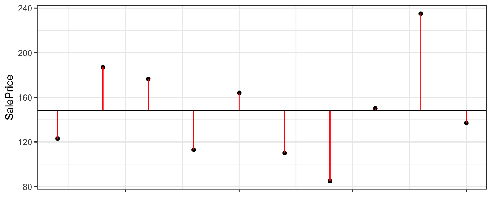
sum(M0$residuals^2)## [1] 17558.52Model Using Neighborhood
sum(M_Nbhd$residuals^2)## [1] 4656.1882.1.17 Quantifying Variability Explained
- the total variability in house prices is the sum of the squared differences between price and average price.
\[\text{Total Variability in Price}= \text{SST} =\displaystyle\sum_{i=1}^n(y_i-\bar{y})^2\]
- the variability remaining unexplained even after accounting for neighborhood is given by the sum of squared residuals. We abbreviate this SSR, for sum of squared residuals.
\[ \text{SSR} = \text{Variability Remaining}=\displaystyle\sum_{i=1}^n(y_i-\hat{y}_i)^2 \]
- the variability explained by the model, abbreviated SSM, is given by
\[ \text{SSM} = \text{SST} - \text{SSR} \]
It can be shown that \(\text{SSM}=\displaystyle\sum_{i=1}^n(\hat{y}_i-\bar{y})^2\). These abbreviations here vary across texts. Be careful!
2.1.18 Coefficient of Determination
- The coefficient of determination (abbreviated \(R^2\)) is defined as
\[R^2=\frac{\text{Variability Explained by Model}}{\text{Total Variability}}=\frac{\text{SSM}}{\text{SST}} =\frac{\displaystyle\sum_{i=1}^n(\hat{y}_i-\bar{y})^2}{\displaystyle\sum_{i=1}^n(y_i-\bar{y})^2}\]
- \(R^2\) can be interpreted as the proportion of total variability in the response variable that is explained by the model using the given explanatory variable(s).
2.1.19 \(R^2\) Visually

Blue Area = Total Variability (SST)
Red Area = Variability Remaining Unexplained by Model (SSR)
Blue Area - Red Area = Variability Explained by Model (SSM)
\(R^2 = \frac{\text{Area of Blue Squares} - \text{Area of Red Squares}}{\text{Area of Blue Squares}} = \frac{\text{SST}-\text{SSR}}{\text{SST}}= \frac{\text{SSM}}{\text{SST}}\)
2.1.20 Variation Explained by Neighborhood Model
- Total variability in house prices SST = 17,558.52
- Variability remaining unexplained after model accounting for neighborhood: SSR =4,656.188
- Variability explained by model: SSM=SST-SSR=17,558.52 - 4,656.188 = 12,901.81
\[ R^2= \frac{12,901.81}{17,558.52}\approx0.7348 \]
73.5% of the variation in house price is explained by the model using neighborhood as an explanatory variable.
This matches the value of "Multiple R-squared" in the 2nd last line of the R model summary.
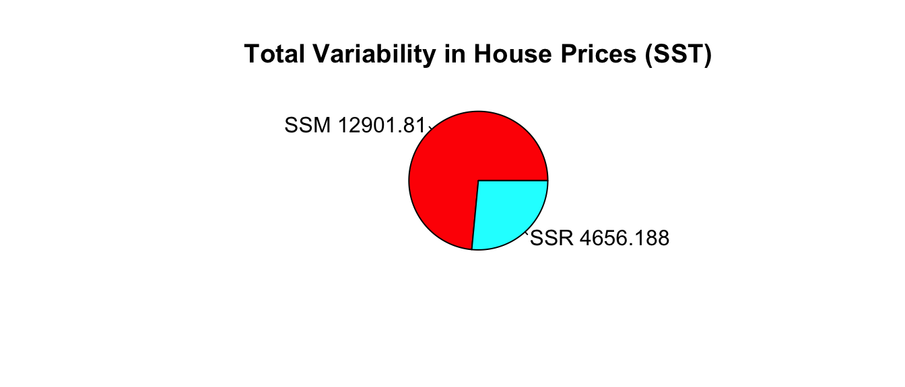
2.2 Models with a Quantitative Explanatory Variable
2.2.1 Model using SquareFeet in House
Now, suppose we do not know the neighborhood, but do know the size of the house in square feet.
ggplot(data=Houses, aes(x=SquareFeet, y=SalePrice)) + geom_point() 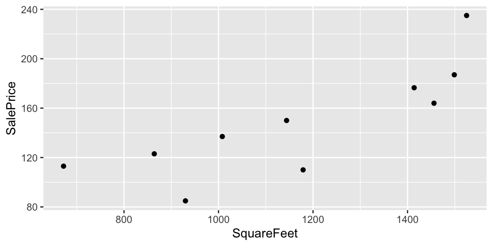
Suppose we want to predict the price of houses with the following number of square feet:
- 990 square feet
- 1235 square feet
- 1476 square feet
2.2.2 Model on SquareFeet in House
Since square feet is a quantitative variable, we can make predictions by fitting a line to the data.
ggplot(data=Houses, aes(x=SquareFeet, y=SalePrice)) + geom_point() +
stat_smooth(method="lm", se=FALSE)
- For a house with 990 square feet, predicted price is about $125 thousand.
- For a house with 1235 square feet, predicted price is about $155 thousand.
- For a house with 1476 square feet, predicted price is about $185 thousand.
2.2.3 Model using Square Feet
M_SqFt <- lm(data=Houses, SalePrice~SquareFeet)
summary(M_SqFt)##
## Call:
## lm(formula = SalePrice ~ SquareFeet, data = Houses)
##
## Residuals:
## Min 1Q Median 3Q Max
## -39.235 -14.309 2.052 10.966 43.971
##
## Coefficients:
## Estimate Std. Error t value Pr(>|t|)
## (Intercept) 6.82000 36.35455 0.188 0.85586
## SquareFeet 0.12079 0.03022 3.997 0.00397 **
## ---
## Signif. codes: 0 '***' 0.001 '**' 0.01 '*' 0.05 '.' 0.1 ' ' 1
##
## Residual standard error: 27.06 on 8 degrees of freedom
## Multiple R-squared: 0.6663, Adjusted R-squared: 0.6246
## F-statistic: 15.97 on 1 and 8 DF, p-value: 0.0039672.2.4 Model for SquareFeet and Interpretations
In the model using both square feet and neighborhood, the regression equation is
\(\widehat{\text{Price}}= b_0+ b_1 \times\text{SquareFeet}\)
\(\widehat{\text{Price}}= 6.82+ 0.121 \times\text{SquareFeet}\)
\(\widehat{\text{Price}}\) represents the expected, or predicted, price.
- The slope, \(b_1\) represents the expected change in price (in thousands) per one-unit increase in square feet.
- The price of a house is expected to increase by 121 dollars for each additional square foot.
- The intercept, \(b_0\) represents the expected price of a house with 0 square feet.
- In this situation, this is not a meaningful interpretation.
2.2.5 Calculating Predicted Prices
\(\widehat{\text{Price}}= 6.82+ 0.121 \times\text{SquareFeet}\)
- Predicted price for a house with 990 square feet:
\(\widehat{\text{Price}}= 6.82+ 0.121 \times990 = 126.4\) thousand dollars.
- Predicted price for a house with 1235 square feet:
\(\widehat{\text{Price}}= 6.82+ 0.121 \times1235 = 156.0\) thousand dollars.
- Predicted price for a house with with 1476 square feet:
\(\widehat{\text{Price}}= 6.82+ 0.121 \times1476 = 185.1\) thousand dollars.
2.2.6 Residuals for SquareFeet Model
The difference between the actual and predicted price is called the residual.
M_SqFt$residuals## 1 2 3 4 5 6
## 11.8149181 -0.8885824 -1.1211847 25.0071576 -18.7044870 -39.2348498
## 7 8 9 10
## -34.2574142 4.9929021 43.9708019 8.4207385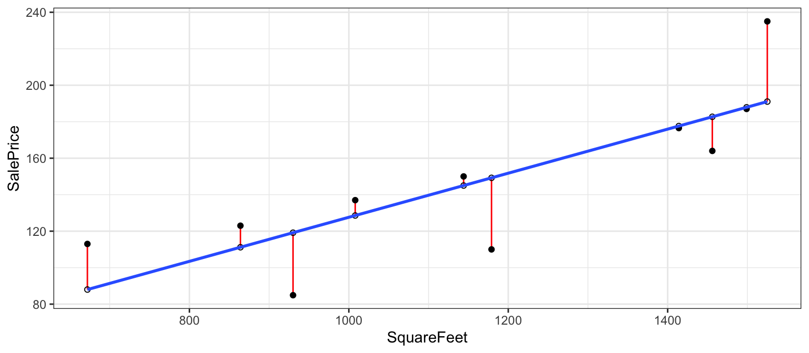
2.2.7 Residuals for SquareFeet Model (cont.)
## SalePrice Predicted Residual ResidualSq
## 1 123.00 111.18508 11.8149181 139.5922893
## 2 187.00 187.88858 -0.8885824 0.7895786
## 3 176.50 177.62118 -1.1211847 1.2570550
## 4 113.00 87.99284 25.0071576 625.3579304
## 5 163.99 182.69449 -18.7044870 349.8578356
## 6 110.00 149.23485 -39.2348498 1539.3734427
## 7 84.90 119.15741 -34.2574142 1173.5704309
## 8 150.00 145.00710 4.9929021 24.9290718
## 9 235.00 191.02920 43.9708019 1933.4314183
## 10 137.00 128.57926 8.4207385 70.9088361sum(M_SqFt$residuals^2)## [1] 5859.0682.2.8 Variation Explained by SquareFeet Model

Created at http://www.rossmanchance.com/applets/RegShuffle.htm.
Blue Area = Total Variability (SST)
Red Area = Variability Remaining Unexplained by Model (SSR)
Blue Area - Red Area = Variability Explained by Model (SSM)
\(R^2 = \frac{\text{Area of Blue Squares} - \text{Area of Red Squares}}{\text{Area of Blue Squares}} = \frac{\text{SST}-\text{SSR}}{\text{SST}}= \frac{\text{SSM}}{\text{SST}}\)
2.2.9 Variation Explained by SquareFeet Model
- Total variability in house prices SST = 17,558.52
- Variability remaining unexplained after accounting for square feet is SSR = 5,859.07
- Variation explained by model accounting for square feet is \[ \text{SSM} = 17,558.52 - 5,859.07 = 11,699.45 \]
Proportion of variation explained by model accounting for square feet is \[ R^2=\frac{11,699.45}{17,558.52}\approx0.6663\]
66.6% of the variation in house price is explained by the model using square feet as an explanatory variable.
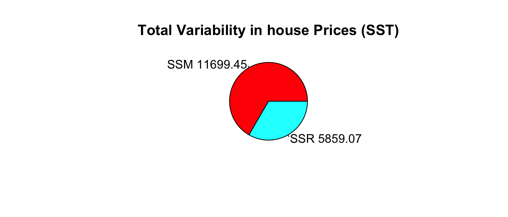
2.2.10 Linear Correlation Coefficient
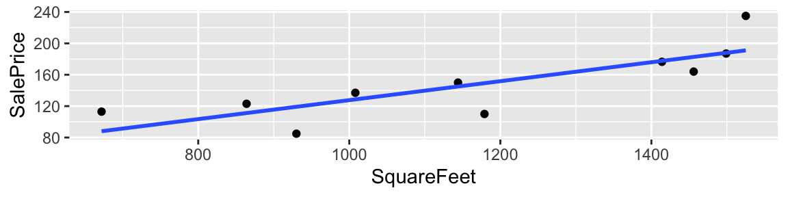
For linear models with a single quantitative variable, the linear correlation coefficient \(r=\sqrt{R^2}\), or \(r=-\sqrt{R^2}\) (with sign matching the sign on the slope of the line), provides information about the strength and direction of the linear relationship between the variables.
\(-1 \leq r \leq 1\), and \(r\) close to \(\pm1\) provides evidence of strong linear relationship, while \(r\) close to 0 suggests linear relationship is weak.
\(r\) is only relevant for models with a single quantitative explanatory variable and a quantitative response variable, while \(R^2\) is relevant for any linear model with a quantitative response variable.
cor(Houses$SalePrice,Houses$SquareFeet)## [1] 0.81627942.3 Multiple Regression Model
2.3.1 Multiple Regression Model
Suppose we have information on both the neighborhood and square feet in the houses. We can account for both of these together using a multiple regression model, i.e. a model with more than one explanatory variable.
Houses## # A tibble: 10 x 3
## Neighborhood SquareFeet SalePrice
## <fct> <int> <dbl>
## 1 NAmes 864 123
## 2 CollgCr 1499 187
## 3 NAmes 1414 176.
## 4 Edwards 672 113
## 5 CollgCr 1456 164.
## 6 Edwards 1179 110
## 7 Edwards 930 84.9
## 8 NAmes 1144 150
## 9 CollgCr 1525 235
## 10 NAmes 1008 1372.3.2 2-Variable Model with Constant Slope
We'll assume the rate of increase wrt. square feet (i.e. slope) is the same in each neighborhood, but that some neighborhoods are more expensive than others.
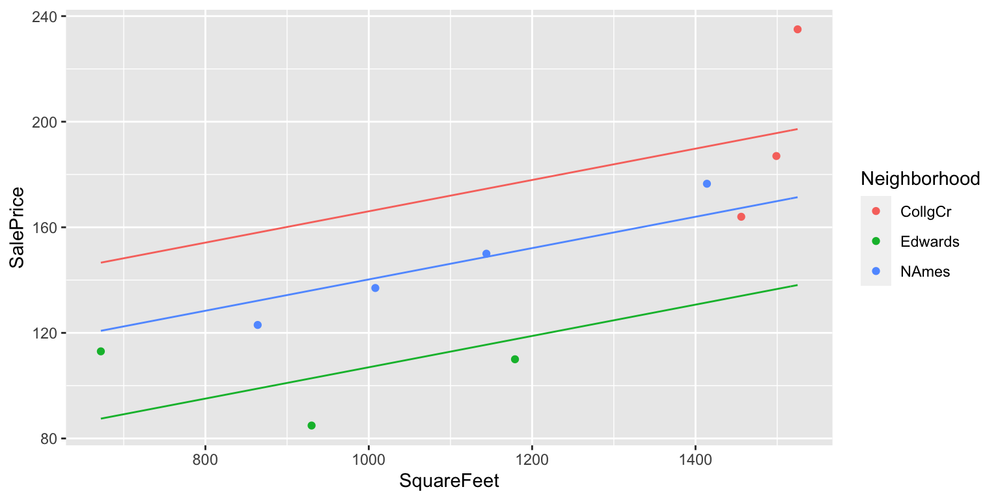
2.3.3 House Price 2-Variable Model Summary
M_Nbhd_SqFt <- lm(data=Houses, SalePrice~SquareFeet+Neighborhood)
summary(M_Nbhd_SqFt)##
## Call:
## lm(formula = SalePrice ~ SquareFeet + Neighborhood, data = Houses)
##
## Residuals:
## Min 1Q Median 3Q Max
## -29.125 -9.050 -5.653 9.069 37.791
##
## Coefficients:
## Estimate Std. Error t value Pr(>|t|)
## (Intercept) 106.72593 68.92188 1.549 0.172
## SquareFeet 0.05933 0.04517 1.314 0.237
## NeighborhoodEdwards -59.09436 32.49761 -1.818 0.119
## NeighborhoodNAmes -25.81232 25.59807 -1.008 0.352
##
## Residual standard error: 24.55 on 6 degrees of freedom
## Multiple R-squared: 0.7941, Adjusted R-squared: 0.6911
## F-statistic: 7.711 on 3 and 6 DF, p-value: 0.017572.3.4 MR Model for SquareFeet and Neighborhood
In the model using both square feet and neighborhood, the regression equation is
\(\widehat{\text{Price}}= b_0+ b_1 \times\text{SquareFeet}+ b_2\times\text{I}_{Edwards} + b_3 \times\text{I}_{NAmes}\)
\(\widehat{\text{Price}}= 106.73+ 0.06 \times\text{SquareFeet}+ -59.09 \times\text{I}_{Edwards} +-25.81 \times\text{I}_{NAmes}\)
- The intercept \(b_0\) represents the expected price of a house in College Creek with 0 square feet.
- the intercept has no meaningful interpretation in this context
- \(b_1\) represents the expected change in price (in thousands) per one-unit increase in square feet, assuming neighborhood is the same.
- on average, we expect the price of a house to increase by $0.05933 thousand (i.e. $59.33) for each additional square foot, assuming the houses are in the same neighborhood.
- on average, we expect the price of a house to increase by $0.05933 thousand (i.e. $59.33) for each additional square foot, assuming the houses are in the same neighborhood.
- \(b_2\) and \(b_3\) represent the expected difference in price between a house in the Edwards (or North Ames) neighborhood, compared to the College Creek neighborhood, assuming square footage is the same.
- We expect a house in the Edwards neighborhood to cost $59.094 less than a house in the College Creek Neighborhood, assuming the houses are the same size.
- We expect a house in the North Ames Neighborhood to cost $25.812 less than a house in the College Creek Neighborhood, assuming the houses are the same size.
- We expect a house in the Edwards neighborhood to cost $59.094 less than a house in the College Creek Neighborhood, assuming the houses are the same size.
2.3.5 Predicting Price in MR Model
\(\widehat{\text{Price}}= 106.73+ 0.06 \times\text{SquareFeet}+ -59.09 \times\text{I}_{Edwards} +-25.81 \times\text{I}_{NAmes}\)
- 848 square foot house in College Creek
\(\widehat{\text{Price}}= 106.73+ 0.06 \times848+ -59.09 \times0 +-25.81 \times 0 =157.0378\) thousand
- 1200 square foot house in North Ames
\(\widehat{\text{Price}}= 106.73+ 0.06 \times1200+ -59.09 \times0 +-25.81 \times1 = 152.1096\) thousand
- 2314 square foot house in Edwards
\(\widehat{\text{Price}}= 106.73+ 0.06 \times\text{SquareFeet}+ -59.09 \times1 +-25.81 \times 0 =184.9212\) thousand
2.3.6 Risk of Extrapolation
Note that 2314 square feet is well outside the range of our observed data. We should treat this prediction with caution, since we don't know whether the trend we see in our data will continue.

2.3.7 Residuals for 2-Variable Model
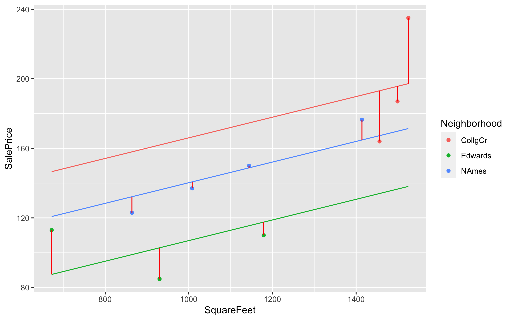
2.3.8 Residuals for 2-Variable Model (cont.)
## SalePrice Predicted Residual ResidualSq
## 1 123.00 132.1774 -9.177395 84.224570
## 2 187.00 195.6662 -8.666221 75.103383
## 3 176.50 164.8106 11.689410 136.642314
## 4 113.00 87.5034 25.496603 650.076744
## 5 163.99 193.1149 -29.124898 848.259699
## 6 110.00 117.5853 -7.585270 57.536321
## 7 84.90 102.8113 -17.911333 320.815835
## 8 150.00 148.7907 1.209343 1.462509
## 9 235.00 197.2089 37.791119 1428.168680
## 10 137.00 140.7214 -3.721358 13.848508sum(M_Nbhd_SqFt$residuals^2)## [1] 3616.1392.3.9 Variation Explained by 2-Variable Model
- Total Variation in house prices: SST=17,558.52
- Variation remaining unexplained after accounting for square feet is SSR=3,616.139
Variation explained by model accounting for square feet is \[SSM=SST-SSR=17,558.52 - 3,616.139 = 13,942.38\]
Proportion of variation in house prices explained by model is:
\[ R^2 = \frac{13,942.38}{17,558.52}\approx0.794 \]
- 79.4% of the variation in house price is explained by the model using square feet as an explanatory variable.
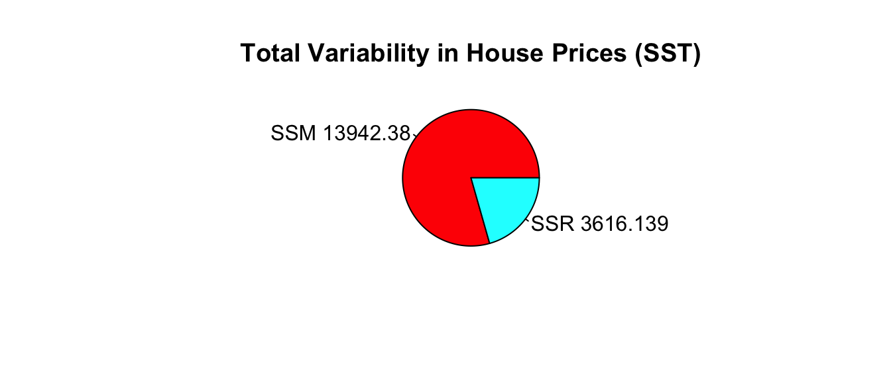
2.3.10 Model Comparison Summary
| Model | Variables | Unexplained Variability | Variability Explained | \(R^2\) |
|---|---|---|---|---|
| 0 | None | 17558.52489 | 0 | 0 |
| 1 | Nbhd | 4656.1875667 | 12902.3373233 | 0.734819 |
| 2 | Sq. Ft. | 5859.0678887 | 11699.4570013 | 0.6663121 |
| 3 | Nbhd, Sq. Ft. | 3616.1385638 | 13942.3863262 | 0.7940523 |
Comments on \(R^2\):
- \(R^2\) will never decrease when a new variable is added to a model.
- This does not mean that adding more variables to a model always improves its ability to make predictions on new data.
- \(R^2\) measures how well a model fits the data on which it was built.
- It is possible for a model with high \(R^2\) to "overfit" the data it was built from, and thus perform poorly on new data. We will discuss this idea extensively later in the course.
2.4 Least-Squares Estimation
2.4.1 Estimation of Model Coefficients
Learning Outcome:
- Explain how obtain model coefficients \(b_0, b_1, b_p\).
2.4.2 Least-Squares Estimation
ggplot(data=Houses, aes(x=SquareFeet, y=SalePrice)) + geom_point() +
stat_smooth(method="lm", se=FALSE)
The line \(\text{Price} = 6.82 + 0.12 \times \text{Square Feet}\) is considered the "line of best fit" in the sense that it minimizes the sum of the squared residuals.
This Rossman-Chance applet provides an illustration of the line of best fit.
2.4.3 Least Squares in General Form
Consider a dataset of \(n\) observations and p explanatory variables,
\[ \begin{bmatrix} x_{11} & x_{12} & \cdots & x_{1p} & y_1\\ x_{21} & x_{22} & \cdots & x_{2p} & y_2\\ \vdots & \vdots & & \vdots & \vdots\\ x_{n1} & x_{n2} & \cdots & x_{np} & y_n\\ \end{bmatrix} \]
where \(y_i\) represents the response variable for case \(i\) and \(x_{ip}\) represent the value or category indicatory of explanatory variable \(p\) for case \(i\).
The line of best fit: \(\hat{y}_i = b_0 + b_1x_{i1} + b_2{x_i2} + \ldots + b_px_{ip}\) is, where \(b_0, b_1, \ldots, b_p\) are chosen to minimize:
\[ \displaystyle\sum_{i=1}^n (y_i -\hat{y}_i)^2 = \displaystyle\sum_{i=1}^n (y_i - (b_0 + b_1x_{i1} + b_2{x_i2} + \ldots + b_px_{ip}))^2 \]
2.4.4 Least-Squares Estimation in Simple Linear Regression
Consider a simple linear regression(SLR) model, which is one with a singe quantitative explanatory variable.
\(\hat{y}_i = b_0+b_1x_i\)
we need to minimize:
\[ \displaystyle\sum_{i=1}^n(y_i-\hat{y}_i)^2 =\displaystyle\sum_{i=1}^n(y_i-(b_0+b_1x_i))^2 \]
2.4.5 Least-Squares Estimation in Simple Linear Regression (cont.)
Using calculus, it can be shown that this quantity is minimized when
\(b_1=\frac{\displaystyle\sum_{i=1}^{n}(x_i-\bar{x})(y_i-\bar{y})}{\displaystyle\sum_{i=1}^{n}(x_i-\bar{x})^2}=\frac{\displaystyle\sum_{i=1}^{n} x_i y_i-\frac{\displaystyle\sum_{i=1}^{n} x_i \displaystyle\sum_{i=1}^{n} y_i }{n}}{\left(\displaystyle\sum_{i=1}^{n} x_i^2 -\frac{\left(\displaystyle\sum_{i=1}^{n} x_i\right)^2}{n}\right)}\)
\(b_0=\bar{y}-b_1\bar{x}\) (where \(\bar{y}=\frac{\displaystyle\sum_{i=1}^{n}{y_i}}{n}\), and \(\bar{x}=\frac{\displaystyle\sum_{i=1}^{n}{x_i}}{n}\)).
2.4.6 LS Estimation for One Categorical Variable
Consider a model with a single categorical variable (such as neighborhood), with G+1 categories, numbered \(g=0,2, \ldots, G\)
Then \(\hat{y}_i = b_0 + b_1x_{i1} + \ldots +b_{G}x_{iG}\).
we need to minimize
\[ \displaystyle\sum_{i=1}^n(y_i-\hat{y}_i)^2 =\displaystyle\sum_{i=1}^n(y_i-(b_0 + b_1x_{i1} + \ldots +b_{G}x_{iG}))^2. \]
- It can be shown that this is achieved when
- \(b_0 = \bar{y_0}\) (i.e. the average response in the "baseline group"), and
- \(b_j = \bar{y_j} - \bar{y}_0\)
2.4.7 LS Estimation More Generally
- For multiple regression models, the logic is the same. We need to choose \(b_0, b_1, \ldots, b_p\) in order to minimize
\[ \displaystyle\sum_{i=1}^n (y_i -\hat{y}_i)^2 = \displaystyle\sum_{i=1}^n (y_i -(b_0 + b_1x_{i1} + b_2{x_i2} + \ldots + b_px_{ip}))^2 \]
The mathematics, however are more complicated and require inverting a matrix. This goes beyond the scope of this class, so we will let R do the estimation and use the results.
More on least squares estimation in multiple regression can be found here.
2.5 ANalysis Of VAriance
2.5.1 ANalysis Of VAriance
Learning Outcomes
- Use ANOVA F-statistics to compare models and sub-models.
- Use F-statistics to measure variability between groups, compared to variability within groups.
2.5.2 Comparing Submodels
| Model | Variables | Unexplained Variability | Variability Explained | \(R^2\) |
|---|---|---|---|---|
| 0 | None | 17558.52489 | 0 | 0 |
| 1 | Nbhd. | 4656.1875667 | 12902.3373233 | 0.734819 |
| 2 | Sq. Ft | 5859.0678887 | 11699.4570013 | 0.6663121 |
| 3 | Nbhd, Sq. Ft. | 3616.1385638 | 13942.3863262 | 0.7940523 |
Notice that Model 1 is a submodel of Model 3, since all variables used in Model 1 are also used in Model 3.
Model 2 is also a submodel of Model 3.
Model 0 is a submodel of Models 1, 2, and 3.
Models 1 and 2 are not submodels of each other, since Model 1 contains a variable used in Model 2 and Model 2 contains a variable not used in Model 1.
2.5.3 Comparison of Sub-Models
When one model is a submodel of another, we can compare the amount of variability explained by the models, using a technique known as ANalysis Of VAriance (ANOVA).
Reduced Model: \(\hat{y}_i = b_0 + b_1x_{i1} + b_2{x_i2} + \ldots + b_qx_{iq}\)
Full Model: \(\hat{y}_i = b_0 + b_1x_{i1} + b_2{x_i2} + \ldots + b_qx_{iq} + b_{q+1}x_{i{q+1}} \ldots + b_px_{ip}\)
p = ## variables in Full Model
q = ## variables in Reduced Model
n = number of observations
We calculate a statistic called F:
\[ \begin{aligned} F &=\frac{\frac{\text{Unexplained Variability in Reduced Model}-\text{Unexplained Variability in Full Model}}{p-q}}{\frac{\text{Unexplained Variability in Full Model}}{n-(p+1)}} \\ &= \frac{\frac{\text{SSR}_{\text{Reduced}}-\text{SSR}_{\text{Full}}}{p-q}}{\frac{\text{SSR}_{\text{Full}}}{n-(p+1)}} \end{aligned} \]
2.5.5 ANOVA F-Statistic
Let's Calculate an ANOVA F-Statistic to compare Models 2 and 3.
Reduced Model: \(\widehat{\text{Price}}= b_0+ b_1 \times\text{SquareFeet}\)
Full Model: \(\widehat{\text{Price}}= b_0+ b_1 \times\text{SquareFeet}+ b_2\times\text{I}_{Edwards} + b_3 \times\text{I}_{NAmes}\)
\[ \begin{aligned} F &= \frac{\frac{\text{SSR}_{\text{Reduced}}-\text{SSR}_{\text{Full}}}{p-q}}{\frac{\text{SSR}_{\text{Full}}}{n-(p+1)}} \\ &=\frac{\frac{5,859.07-3,616.14}{3-1}}{\frac{3,616.13}{10-(3+1)}} \\ \end{aligned} \]
SSR2 <- sum(M_SqFt$residuals^2); SSR3 <- sum(M_Nbhd_SqFt$residuals^2);
((SSR2-SSR3)/(3-1))/((SSR3)/(10-(3+1)))## [1] 1.8607662.5.6 ANOVA F-Statistic for M2 vs M3 in R
anova(M_SqFt, M_Nbhd_SqFt)## Analysis of Variance Table
##
## Model 1: SalePrice ~ SquareFeet
## Model 2: SalePrice ~ SquareFeet + Neighborhood
## Res.Df RSS Df Sum of Sq F Pr(>F)
## 1 8 5859.1
## 2 6 3616.1 2 2242.9 1.8608 0.2351Notice the F-statistic has the same value.
Later, we will examine what this tells us about adding Neighborhood to a model already containing square feet as an explanatory variable.
2.5.7 ANOVA F-Statistic for M1 vs M0
Now, let's compare Models 0 and 1.
Reduced Model: \(\widehat{\text{Price}}_i = b_0\)
Full Model: \(\widehat{\text{Price}}_i = b_0 + b_1\text{I}_{\text{Edwards}} + b_2\text{I}_{\text{NAmes}}\)
\[ \begin{aligned} F &= \frac{\frac{\text{SSR}_{\text{Reduced}}-\text{SSR}_{\text{Full}}}{p-q}}{\frac{\text{SSR}_{\text{Full}}}{n-(p+1)}} \\ &=\frac{\frac{17558.52-4656.19}{2-0}}{\frac{4656.19}{10-(2+1)}} \end{aligned} \]
SSR0 <- sum(M0$residuals^2); SSR1 <- sum(M_Nbhd$residuals^2);
((SSR0-SSR1)/(2-0))/((SSR1)/(10-(2+1)))## [1] 9.6985312.5.8 ANOVA F-Statistic for M0 vs M1 in R
anova(M0, M_Nbhd)## Analysis of Variance Table
##
## Model 1: SalePrice ~ 1
## Model 2: SalePrice ~ Neighborhood
## Res.Df RSS Df Sum of Sq F Pr(>F)
## 1 9 17558.5
## 2 7 4656.2 2 12902 9.6985 0.009603 **
## ---
## Signif. codes: 0 '***' 0.001 '**' 0.01 '*' 0.05 '.' 0.1 ' ' 12.5.9 ANOVA F-Statistic for Categorical Variables
- The difference between M1 and M0 is that M1 considers the house's neighborhood, while M0 does not.
- If neighborhood is helpful in modeling house price, then we would expect to see a high F-statistic.
- Another way to think about this is that if the amount of variability in house prices between different neighborhoods is large, relative to the amount of variability within neighborhoods, then the F-statistic should be large.
- In fact, an alternative (an mathematically equivalent) way to calculate the F-statistic is to calculate the ratio of variability between different neighborhoods, relative to the amount of variability within neighborhoods.
2.5.10 F-Statistic for Categorical Variables Illustration
An F-statistic compares the amount of variability between groups to the amount of variability within groups.
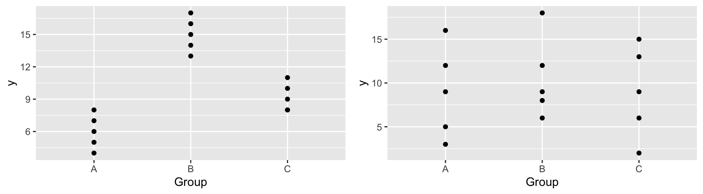
| Scenario 1 | Scenario 2 | |
|---|---|---|
| variation between groups | High | Low |
| variation within groups | Low | High |
| F Statistic | Large | Small |
| Result | Evidence of Group Differences | No evidence of differences |
2.5.11 Alternative F-Statistic Formula
For a categorical variable with \(g\) groups,
let \(\bar{y}_{1\cdot}, \ldots, \bar{y}_{g\cdot}\) represent the mean response for each group.
let \(n_1, \ldots, n_g\) represent the sample size for each group
Then \(\frac{\displaystyle\sum_{i=1}^g\sum_{j=1}^{n_i}n_i(y_{i\cdot}-\bar{y}_{\cdot\cdot})^2}{g-1}\) gives a measure of how much the group means differ, and
\(\frac{\displaystyle\sum_{i=1}^g\sum_{j=1}^{n_i}(y_{ij}-\bar{y}_{i\cdot})^2}{n-g}\) gives a measure of how much individual observations differ within groups
2.5.12 Alternative F-Statistic Formula (cont.)
- An alternative formula for this F-statistic is:
\[ F= \frac{\text{Variability between Neighborhoods}}{\text{Variability within Neighborhoods}}= \frac{\frac{\displaystyle\sum_{i=1}^g\sum_{j=1}^{n_i}n_i(y_{i\cdot}-\bar{y}_{\cdot\cdot})^2}{g-1}}{\frac{\displaystyle\sum_{i=1}^g\sum_{j=1}^{n_i}(y_{ij}-\bar{y}_{i\cdot})^2}{n-g}} \]
- It can be shown that this statistic is equivalent to the one we saw previously.
2.5.13 Calculating F-Statistic for Categorical Variables
We have seen previously that:
- \(\bar{y}_{\cdot\cdot}=148.039\) (overall average price), and \(n=10\)
- \(\bar{y}_{1\cdot}=195.330\) (average price in College Creek), and \(n_1=3\)
- \(\bar{y}_{2\cdot}=102.633\) (average price in Edwards), and \(n_2=4\)
- \(\bar{y}_{3\cdot}=146.625\) (average price in North Ames), and \(n_3=3\)
Then,
\(\frac{\displaystyle\sum_{i=1}^g\sum_{j=1}^{n_i}(y_{i\cdot}-\bar{y}_{\cdot\cdot})^2}{g-1} = \frac{3(195.330-148.039)^2+3(102.633-148.039)^2+4(146.625-148.039)^2}{3-1} = \frac{12902}{2}\), and
\(\frac{\displaystyle\sum_{i=1}^g\sum_{j=1}^{n_i}(y_{ij}-\bar{y}_{i\cdot})^2}{n-g} = \frac{(123.00-146.625)^2+ (187.00 - 195.33)^2 + \ldots + (137.00-146.625)^2}{10-3} = \frac{4656}{7}\)
2.5.14 Calculating F-Statistic for Categorical Variables
\[ F= \frac{\frac{\displaystyle\sum_{i=1}^g\sum_{j=1}^{n_i}n_i(y_{i\cdot}-\bar{y}_{\cdot\cdot})^2}{g-1}}{\frac{\displaystyle\sum_{i=1}^g\sum_{j=1}^{n_i}(y_{ij}-\bar{y}_{i\cdot})^2}{n-g}} = \frac{\frac{(195.330-148.039)^2+(102.633-148.039)^2+(146.625-148.039)^2}{3-1}}{\frac{(123.00-146.625)^2+ (187.00 - 195.33)^2 + \ldots + (137.00-146.625)^2}{10-3}} = \frac{\frac{12902}{2}}{\frac{4656}{7}} \]
- Note that the quantity in the the quantity in the third line is equivalent to the sum of the squared residuals using M2. Thus, we can calculate F using:
((3*(195.330-148.039)^2+3*(102.633-148.039)^2+4*(146.625-148.039)^2)/(3-1))/(sum(M_Nbhd$residuals^2)/(10-3))## [1] 9.69862.5.15 Alternative Calculation in R
This interpretation of the F-statistic can be seen using the AOV command in R.
AOV_Nbhd <- aov(data=Houses, SalePrice~Neighborhood)
summary(AOV_Nbhd)## Df Sum Sq Mean Sq F value Pr(>F)
## Neighborhood 2 12902 6451 9.699 0.0096 **
## Residuals 7 4656 665
## ---
## Signif. codes: 0 '***' 0.001 '**' 0.01 '*' 0.05 '.' 0.1 ' ' 1- The Neighborhood line represents the variability between neighborhoods
The Residuals line represents the variability within neighborhoods
The first two columns give the quantities we use in our formula. The third column, representing the ratio of the first two columns is called a mean square.
2.5.16 F-Statistic in R Output
The last line in the summary output includes the F-statistic for the specified model, compared to a reduced model that includes only the intercept.
Reduced Model: \(\widehat{Y}= b_0\)
Full Model: \(\widehat{Y}= b_0+ b_1 X_{i1}+ \ldots+ b_p X_{ip}\)
This statistic addresses the question "Do any of the explanatory variables help explain variability in Y?".
When there is only one explanatory variable in the model, this statistic can be used to test whether there is evidence that this statistic is associated with \(Y\).
2.5.17 F-Statistic in R Output M1
The F-statistic compares a full model that includes neighborhood to a reduced model that predicts each price using the overall average.
summary(M_Nbhd)##
## Call:
## lm(formula = SalePrice ~ Neighborhood, data = Houses)
##
## Residuals:
## Min 1Q Median 3Q Max
## -31.340 -15.706 -2.477 9.617 39.670
##
## Coefficients:
## Estimate Std. Error t value Pr(>|t|)
## (Intercept) 195.33 14.89 13.118 0.00000349 ***
## NeighborhoodEdwards -92.70 21.06 -4.402 0.00315 **
## NeighborhoodNAmes -48.71 19.70 -2.473 0.04267 *
## ---
## Signif. codes: 0 '***' 0.001 '**' 0.01 '*' 0.05 '.' 0.1 ' ' 1
##
## Residual standard error: 25.79 on 7 degrees of freedom
## Multiple R-squared: 0.7348, Adjusted R-squared: 0.6591
## F-statistic: 9.699 on 2 and 7 DF, p-value: 0.0096032.5.18 F-Statistic in R Output M2
The F-statistic compares a full model that includes square feet to a reduced model that predicts each price using the overall average.
summary(M_SqFt)##
## Call:
## lm(formula = SalePrice ~ SquareFeet, data = Houses)
##
## Residuals:
## Min 1Q Median 3Q Max
## -39.235 -14.309 2.052 10.966 43.971
##
## Coefficients:
## Estimate Std. Error t value Pr(>|t|)
## (Intercept) 6.82000 36.35455 0.188 0.85586
## SquareFeet 0.12079 0.03022 3.997 0.00397 **
## ---
## Signif. codes: 0 '***' 0.001 '**' 0.01 '*' 0.05 '.' 0.1 ' ' 1
##
## Residual standard error: 27.06 on 8 degrees of freedom
## Multiple R-squared: 0.6663, Adjusted R-squared: 0.6246
## F-statistic: 15.97 on 1 and 8 DF, p-value: 0.0039672.5.19 F-Statistic in R Output M3
The F-statistic compares a full model that includes square feet and neighborhood to a reduced model that predicts each price using only the overall average.
summary(M_Nbhd_SqFt)##
## Call:
## lm(formula = SalePrice ~ SquareFeet + Neighborhood, data = Houses)
##
## Residuals:
## Min 1Q Median 3Q Max
## -29.125 -9.050 -5.653 9.069 37.791
##
## Coefficients:
## Estimate Std. Error t value Pr(>|t|)
## (Intercept) 106.72593 68.92188 1.549 0.172
## SquareFeet 0.05933 0.04517 1.314 0.237
## NeighborhoodEdwards -59.09436 32.49761 -1.818 0.119
## NeighborhoodNAmes -25.81232 25.59807 -1.008 0.352
##
## Residual standard error: 24.55 on 6 degrees of freedom
## Multiple R-squared: 0.7941, Adjusted R-squared: 0.6911
## F-statistic: 7.711 on 3 and 6 DF, p-value: 0.017572.5.20 When to Use F-Statistics for Model Comparison
- We have used F-statistics to compare models 1 and 3, and models 0 and 2.
- We could also calculate F-statistics comparing models 2 and 3, models 0 and 1, and models 0 and 3.
- We cannot use an F-statistic to compare models 1 and 2, since neither is a submodel of the other.
- When comparing a model to the "intercept-only" model, we can use the model summary output. When comparing other to other submodels, use the
aov()oranova()commands.
2.5.21 Interaction Models with Categorical Variables
Learning Outcomes
- Fit models involving interactions.
- Make interpret regression coefficients for models with interactions.
- Compare and contrast the assumptions behind models with and without interaction terms.
- We will build a model to predict the weight of a bear, using other characteristics including season, sex, and age.
2.6 Interaction Models with Categorical Variables
2.6.1 Bear Data
Data are available in the Bolstad R package. We examine the structure of the dataset.
library(Bolstad)
data(bears)
glimpse(bears)## Rows: 143
## Columns: 12
## $ ID <int> 39, 41, 41, 41, 41, 43, 43, 45, 45, 48, 69, 83, 83, 83, 83, 91
## $ Age <int> 19, 19, 20, 23, 29, 19, 20, 55, 67, 81, NA, 115, 117, 124, 140
## $ Month <int> 7, 7, 8, 11, 5, 7, 8, 7, 7, 9, 10, 7, 9, 4, 8, 8, 4, 9, 7, 4,
## $ Sex <int> 1, 2, 2, 2, 2, 1, 1, 1, 1, 1, 1, 1, 1, 1, 1, 2, 2, 1, 1, 1, 1,
## $ Head.L <dbl> 10.0, 11.0, 12.0, 12.5, 12.0, 11.0, 12.0, 16.5, 16.5, 15.5, 16
## $ Head.W <dbl> 5.0, 6.5, 6.0, 5.0, 6.0, 5.5, 5.5, 9.0, 9.0, 8.0, 8.0, 10.0, 7
## $ Neck.G <dbl> 15.0, 20.0, 17.0, 20.5, 18.0, 16.0, 17.0, 28.0, 27.0, 31.0, 32
## $ Length <dbl> 45.0, 47.5, 57.0, 59.5, 62.0, 53.0, 56.0, 67.5, 78.0, 72.0, 77
## $ Chest.G <dbl> 23.0, 24.0, 27.0, 38.0, 31.0, 26.0, 30.5, 45.0, 49.0, 54.0, 52
## $ Weight <int> 65, 70, 74, 142, 121, 80, 108, 344, 371, 416, 432, 348, 476, 4
## $ Obs.No <int> 1, 1, 2, 3, 4, 1, 2, 1, 2, 1, 1, 1, 2, 3, 4, 1, 1, 2, 1, 1, 2,
## $ Name <fct> Allen, Berta, Berta, Berta, Berta, Clyde, Clyde, Doc, Doc, Qui2.6.2 Bears Data Cleaning
Notice that we have multiple observations on the same bears. The procedures we have learned so far require observations to be independent of each other. Thus, we'll keep only the first observation on each bear.
Bears_Subset <- bears %>% filter(Obs.No == 1)The variables Month and Sex are coded as integers, but it really makes more sense to think of these as categorical variables. Thus, we will convert them to factors.
Bears_Subset$Month <- as.factor(Bears_Subset$Month)
Bears_Subset$Sex <- as.factor(Bears_Subset$Sex)2.6.3 Examining the Subset
glimpse(Bears_Subset)## Rows: 97
## Columns: 12
## $ ID <int> 39, 41, 43, 45, 48, 69, 83, 91, 179, 241, 253, 274, 280, 394,
## $ Age <int> 19, 19, 19, 55, 81, NA, 115, 104, 100, 56, 51, 57, 53, NA, 68,
## $ Month <fct> 7, 7, 7, 7, 9, 10, 7, 8, 4, 7, 4, 9, 5, 6, 8, 8, 8, 8, 8, 8, 9
## $ Sex <fct> 1, 2, 1, 1, 1, 1, 1, 2, 2, 1, 1, 2, 2, 1, 1, 1, 2, 1, 2, 1, 1,
## $ Head.L <dbl> 10.0, 11.0, 11.0, 16.5, 15.5, 16.0, 17.0, 15.5, 13.0, 15.0, 13
## $ Head.W <dbl> 5.0, 6.5, 5.5, 9.0, 8.0, 8.0, 10.0, 6.5, 7.0, 7.5, 8.0, 7.0, 6
## $ Neck.G <dbl> 15.0, 20.0, 16.0, 28.0, 31.0, 32.0, 31.5, 22.0, 21.0, 26.5, 27
## $ Length <dbl> 45.0, 47.5, 53.0, 67.5, 72.0, 77.0, 72.0, 62.0, 70.0, 73.5, 68
## $ Chest.G <dbl> 23, 24, 26, 45, 54, 52, 49, 35, 41, 41, 49, 38, 31, 32, 44, 19
## $ Weight <int> 65, 70, 80, 344, 416, 432, 348, 166, 220, 262, 360, 204, 144,
## $ Obs.No <int> 1, 1, 1, 1, 1, 1, 1, 1, 1, 1, 1, 1, 1, 1, 1, 1, 1, 1, 1, 1, 1,
## $ Name <fct> Allen, Berta, Clyde, Doc, Quincy, Kooch, Charlie, Geraldine, F2.6.4 Examining the Month Variable
ggplot(data=Bears_Subset, aes(x=Month)) + geom_bar(color="white", fill="lightblue")
Notice that there are no measurements between December and March, the bears' hibernation season.
2.6.5 Season Variable
When a variable has many categories, it becomes harder to compare the categories. Sometimes, it is helpful to create a new variable with fewer variables by combining categories.
Let's combine the months of April and May into a category called "Spring", June, July, and August into "Summer", and "September", "October", and "November", into "Fall".
Bears_Subset <- Bears_Subset %>% mutate(Season = ifelse(Month %in% 4:5, "Spring",
ifelse(Month %in% 6:8, "Summer", "Fall")))
Bears_Subset$Season <- as.factor(Bears_Subset$Season)2.6.6 Visualizing Season Variable
ggplot(data=Bears_Subset, aes(x=Season)) + geom_bar(color="white", fill="lightblue")
2.6.7 Bears Data Summary
summary(Bears_Subset)## ID Age Month Sex Head.L
## Min. : 39.0 Min. : 8.00 8 :23 1:62 Min. : 9.00
## 1st Qu.:525.0 1st Qu.: 17.00 9 :20 2:35 1st Qu.:12.00
## Median :579.0 Median : 34.00 10 :14 Median :13.00
## Mean :537.6 Mean : 42.64 7 :11 Mean :13.29
## 3rd Qu.:640.0 3rd Qu.: 57.25 11 : 9 3rd Qu.:14.50
## Max. :911.0 Max. :177.00 4 : 8 Max. :18.50
## NA's :41 (Other):12
## Head.W Neck.G Length Chest.G
## Min. : 4.000 Min. :10.00 Min. :36.00 Min. :19.00
## 1st Qu.: 5.000 1st Qu.:17.50 1st Qu.:54.50 1st Qu.:30.00
## Median : 6.000 Median :20.00 Median :61.00 Median :34.00
## Mean : 6.364 Mean :21.03 Mean :60.41 Mean :35.93
## 3rd Qu.: 7.000 3rd Qu.:24.00 3rd Qu.:67.00 3rd Qu.:42.00
## Max. :10.000 Max. :32.00 Max. :83.00 Max. :55.00
##
## Weight Obs.No Name Season
## Min. : 26.0 Min. :1 Ian : 2 Fall :43
## 1st Qu.:114.0 1st Qu.:1 Abe : 1 Spring:14
## Median :154.0 Median :1 Addy : 1 Summer:40
## Mean :187.2 Mean :1 Albert : 1
## 3rd Qu.:236.0 3rd Qu.:1 Allen : 1
## Max. :514.0 Max. :1 (Other):89
## NA's : 22.6.8 Histogram of Bear Weights
ggplot(data=Bears_Subset, aes(x=Weight)) +
geom_histogram(color="white", fill="lightblue") +
xlab("Weight") + ylab("Frequency") + ggtitle("Weights of Bears")
We see that bears most commonly weigh between 100 and 200 lbs, and the distribution of weights is right-skewed.
2.6.9 Weight by Season
ggplot(data=Bears_Subset, aes(x=Season, y=Weight)) + geom_boxplot() + geom_jitter() 
2.6.10 Boxplot of Weight and Sex
ggplot(data=Bears_Subset, aes(y=Weight, x=Sex)) +
geom_boxplot() +
xlab("Sex(1=M, 2=F)") + ylab("Weight") + ggtitle("Weight by Sex") + coord_flip()
We see that male bears (Category 1) weigh more than female bears on average, and that there is more variability in the weights of male bears than female bears.
2.6.11 Bears: Season and Sex Model without Interaction
\(\widehat{\text{Weight}} = b_0+b_1\times\text{I}_{\text{Spring}}+b_2\times\text{I}_{\text{Summer}} + b_3\times\text{I}_{\text{Female}}\)
| Season | Male | Female |
|---|---|---|
| Fall | \(b_0\) | \(b_0 + b_3\) |
| Spring | \(b_0 + b_1\) | \(b_0 + b_1+ b_3\) |
| Summer | \(b_0 + b_2\) | \(b_0 + b_2+ b_3\) |
Model Assumptions:
- Allows weights to differ by sex and season.
- Assumes difference between sexes is the same in each season and difference between seasons is the same for each sex.
2.6.12 Bears Season and Sex Model Output
Let's model weights of male and female bears individually by season.
Bears_M_Season_Sex <- lm(data=Bears_Subset, Weight~Season + Sex)
summary(Bears_M_Season_Sex)##
## Call:
## lm(formula = Weight ~ Season + Sex, data = Bears_Subset)
##
## Residuals:
## Min 1Q Median 3Q Max
## -186.73 -76.56 -17.32 63.44 287.27
##
## Coefficients:
## Estimate Std. Error t value Pr(>|t|)
## (Intercept) 226.73 18.14 12.500 < 0.0000000000000002 ***
## SeasonSpring -25.54 33.56 -0.761 0.44856
## SeasonSummer -28.17 23.79 -1.184 0.23939
## Sex2 -67.24 23.06 -2.916 0.00445 **
## ---
## Signif. codes: 0 '***' 0.001 '**' 0.01 '*' 0.05 '.' 0.1 ' ' 1
##
## Residual standard error: 108.3 on 93 degrees of freedom
## Multiple R-squared: 0.1024, Adjusted R-squared: 0.07343
## F-statistic: 3.536 on 3 and 93 DF, p-value: 0.017742.6.13 Predictions using Season and Sex
\(\widehat{\text{Weight}} = 226.73-25.54 \times\text{I}_{\text{Spring}}-28.17\times\text{I}_{\text{Summer}} -67.24\times\text{I}_{\text{Female}}\)
| Male | Female | |
|---|---|---|
| Fall | 226.73 - 25.54(0) - 28.17(0) -67.24(0)=226.73 | 226.73 - 25.54(0) - 28.17(0) -67.24(1)=159.59 |
| Spring | 226.73 - 25.54(1) - 28.17(0) -67.24(0)=201.19 | 226.73 - 25.54(1) - 28.17(0) -67.24(1)=133.95 |
| Summer | 226.73 - 25.54(0) - 28.17(1) -67.24(0)=198.55 | 226.73 - 25.54(0) - 28.17(1) -67.24(1)=131.32 |
2.6.14 Weight using Season and Sex Model Interpretations
\(\widehat{\text{Weight}} = 226.73-25.54 \times\text{I}_{\text{Spring}}-28.17\times\text{I}_{\text{Summer}} -67.24\times\text{I}_{\text{Female}}\)
Note that fall and male are treated as the "baseline" levels in this model.
On average, male bears are expected to weigh 226.73 lbs in the fall.
On average, bears of the same sex are expected to weigh 25.54 lbs less in the spring than in the fall.
On average, bears of the same sex are expected to weigh 28.17 lbs less in the summer than in the fall.
On average, female bears are expected to weigh 67.24 lbs than male bears, in the same season.
The model with season and sex explains about 10% of the variation in bear weights.
2.6.15 Season and Sex with Interaction
\[\widehat{\text{Weight}} = b_0 + b_1 \times\text{I}_{\text{Spring}} + b_2\times\text{I}_{\text{Summer}} +b_3\times\text{I}_{\text{Female}}\\ +b_4\times\text{I}_{\text{Spring}}\text{I}_{\text{Female}} +b_5\times\text{I}_{\text{Summer}}\text{I}_{\text{Female}}\]
| Male | Female | |
|---|---|---|
| Fall | \(b_0\) | b_0+b_3 |
| Spring | \(b_0+b_1\) | \(b_0+b_1 +b_3+b_4\) |
| Summer | \(b_0+b_2\) | \(b_0+b_2+b_3+b_5\) |
Model Assumptions:
- Allows for differences between seasons and sexes.
- Allows for differences between sexes to vary between seasons and difference between seasons to vary between sexes.
\(b_4\) and \(b_5\) are called interaction effects.
2.6.16 Bears Season and Sex Interaction Model
To fit an interaction model in R, use * instead of +
Bears_M_Season_Sex_Int <- lm(data=Bears_Subset, Weight~Season * Sex)
summary(Bears_M_Season_Sex_Int)##
## Call:
## lm(formula = Weight ~ Season * Sex, data = Bears_Subset)
##
## Residuals:
## Min 1Q Median 3Q Max
## -181.14 -73.14 -13.07 58.81 292.86
##
## Coefficients:
## Estimate Std. Error t value Pr(>|t|)
## (Intercept) 221.14 20.28 10.905 <0.0000000000000002 ***
## SeasonSpring -14.00 45.99 -0.304 0.762
## SeasonSummer -17.95 29.49 -0.608 0.544
## Sex2 -50.07 35.54 -1.409 0.162
## SeasonSpring:Sex2 -29.08 68.34 -0.425 0.672
## SeasonSummer:Sex2 -30.41 50.73 -0.599 0.550
## ---
## Signif. codes: 0 '***' 0.001 '**' 0.01 '*' 0.05 '.' 0.1 ' ' 1
##
## Residual standard error: 109.2 on 91 degrees of freedom
## Multiple R-squared: 0.1064, Adjusted R-squared: 0.0573
## F-statistic: 2.167 on 5 and 91 DF, p-value: 0.064582.6.17 Predictions for Season and Sex Interaction Model
\[\widehat{\text{Weight}} = b_0 + b_1 \times\text{I}_{\text{Spring}} + b_2\times\text{I}_{\text{Summer}} +b_3\times\text{I}_{\text{Female}}\\ +b_4\times\text{I}_{\text{Spring}}\text{I}_{\text{Female}} +b_5\times\text{I}_{\text{Summer}}\text{I}_{\text{Female}}\]
\[ \begin{aligned} \widehat{\text{Weight}} &= 221.14 -14.00 \times\text{I}_{\text{Spring}} -17.95\times\text{I}_{\text{Summer}} -50.07\times\text{I}_{\text{Female}} \\ &-29.08\times\text{I}_{\text{Spring}}\text{I}_{\text{Female}} -30.41\times\text{I}_{\text{Summer}}\text{I}_{\text{Female}} \end{aligned} \]
| Male | Female | |
|---|---|---|
| Fall | 221.14 -14.00(0) -17.95(0) -50.07(0) -29.08(0)(0) -30.41(0)(0)=221.14 | 221.14 -14.00(0) -17.95(0) -50.07(1) -29.08(0)(1) -30.41(0)(1) =171.07 |
| Spring | 221.14 -14.00(1) -17.95(0) -50.07(0) -29.08(1)(0) -30.41(0)(0) =207.14 | 211.375 + 8.01221.14 -14.00(1) -17.95(0) -50.07(1) -29.08(1)(1) -30.41(0)(1)=128.00 |
| Summer | 221.14 -14.00(0) -17.95(1) -50.07(0) -29.08(0)(0) -30.41(1)(0) =203.19 | 221.14 -14.00(0) -17.95(1) -50.07(1) -29.08(0)(1) -30.41(1)(1) =122.71 |
2.6.18 Season and Sex Interaction Model Interpretations
\[\widehat{\text{Weight}} = b_0 + b_1 \times\text{I}_{\text{Spring}} + b_2\times\text{I}_{\text{Summer}} +b_3\times\text{I}_{\text{Female}}\\ +b_4\times\text{I}_{\text{Spring}}\text{I}_{\text{Female}} +b_5\times\text{I}_{\text{Summer}}\text{I}_{\text{Female}}\]
| Male | Female | |
|---|---|---|
| Fall | \(b_0\) | \(b_0+b_3\) |
| Spring | \(b_0+b_1\) | \(b_0+b_1 +b_3+b_4\) |
| Summer | \(b_0+b_2\) | \(b_0+b_2+b_3+b_5\) |
- \(b_0\) represents expected weight of male bear in fall
- \(b_1\) represents difference between expected male bear weight in spring, compared to fall
- \(b_2\) represents difference between expected male bear weight in summer, compared to fall
- \(b_3\) represents difference between expected female bear weight, compared to male bear weight in fall
- \(b_4\) represents difference in expected weights between the sexes in the spring, compared to the difference in the fall
- \(b_5\) represents difference in expected weights between the sexes in the summer, compared to the difference in the fall
2.6.19 Interpretations for Season and Sex Interaction Model
\[ \begin{aligned} \widehat{\text{Weight}} &= 221.14 -14.00 \times\text{I}_{\text{Spring}} -17.95\times\text{I}_{\text{Summer}} -50.07\times\text{I}_{\text{Female}} \\ &-29.08\times\text{I}_{\text{Spring}}\text{I}_{\text{Female}} -30.41\times\text{I}_{\text{Summer}}\text{I}_{\text{Female}} \end{aligned} \]
- On average, male bears are expected to weigh 221.14 lbs in the fall.
- On average male bears are expected to weigh 14 lbs less in the spring than in the fall.
- On average, male bears are expected to weigh 17.95 lbs less in the summer than in the fall.
- On average, female bears are expected to weigh 50.07 lbs less than male bears in the fall.
- On average, the female bears are expected to weigh 29.08 lbs. less relative to male bears in the spring, compared to the expected difference the fall. Thus, female bears are expected to weigh 50.07 + 29.08 = 79.17 lbs less than male bears in the spring.
- On average, female bears are expected to weigh 30.41 lbs less, relative to male bears in the summer, compared to the expected difference in the fall. Thus, female bears are expected to weigh \(50.07 + 30.41 = 80.48\) lbs less than male bears in the summer.
The interaction model explains about 10.6% of the variation in bear weights.
2.6.20 Predicting New Observations in R
We can calculate predictions directly in R by putting the new data in a data.frame and calling the predict() function.
Season <- c("Fall", "Fall", "Spring", "Spring", "Summer", "Summer")
Sex <- factor(c(1,2,1,2,1,2))
NewBears <- data.frame(Season, Sex)predict(Bears_M_Season_Sex, newdata=NewBears)## 1 2 3 4 5 6
## 226.7290 159.4900 201.1909 133.9520 198.5586 131.3197predict(Bears_M_Season_Sex_Int, newdata=NewBears)## 1 2 3 4 5 6
## 221.1379 171.0714 207.1429 128.0000 203.1923 122.71432.7 Interaction Models with Categorical and Quantitative Variables
2.7.1 Summary of Bears Dataset
summary(Bears_Subset)## ID Age Month Sex Head.L
## Min. : 39.0 Min. : 8.00 8 :23 1:62 Min. : 9.00
## 1st Qu.:525.0 1st Qu.: 17.00 9 :20 2:35 1st Qu.:12.00
## Median :579.0 Median : 34.00 10 :14 Median :13.00
## Mean :537.6 Mean : 42.64 7 :11 Mean :13.29
## 3rd Qu.:640.0 3rd Qu.: 57.25 11 : 9 3rd Qu.:14.50
## Max. :911.0 Max. :177.00 4 : 8 Max. :18.50
## NA's :41 (Other):12
## Head.W Neck.G Length Chest.G
## Min. : 4.000 Min. :10.00 Min. :36.00 Min. :19.00
## 1st Qu.: 5.000 1st Qu.:17.50 1st Qu.:54.50 1st Qu.:30.00
## Median : 6.000 Median :20.00 Median :61.00 Median :34.00
## Mean : 6.364 Mean :21.03 Mean :60.41 Mean :35.93
## 3rd Qu.: 7.000 3rd Qu.:24.00 3rd Qu.:67.00 3rd Qu.:42.00
## Max. :10.000 Max. :32.00 Max. :83.00 Max. :55.00
##
## Weight Obs.No Name Season
## Min. : 26.0 Min. :1 Ian : 2 Fall :43
## 1st Qu.:114.0 1st Qu.:1 Abe : 1 Spring:14
## Median :154.0 Median :1 Addy : 1 Summer:40
## Mean :187.2 Mean :1 Albert : 1
## 3rd Qu.:236.0 3rd Qu.:1 Allen : 1
## Max. :514.0 Max. :1 (Other):89
## NA's : 22.7.2 Histogram of Bear Ages
ggplot(data=Bears_Subset, aes(x=Age)) +
geom_histogram(color="white", fill="lightblue") +
xlab("Age (in months)") + ylab("Frequency") + ggtitle("Ages of Bears (in months)")
2.7.3 Bears with Missing Ages
Recall that 41 bears had missing ages. They will be ignored if we use age in our model. To see how this might impact predicted weights, let's look at how weights compare for bears with and without missing ages.
ggplot(data=Bears_Subset, aes(x=is.na(Age), y=Weight)) + geom_boxplot() + coord_flip()
Bears with missing ages do not seem to be systematically different than those whose ages are recorded, with respect to weight, so the missing ages should not cause too much concern with out model results.
2.7.4 Boxplot of Weight and Sex
ggplot(data=Bears_Subset, aes(y=Weight, x=Sex)) +
geom_boxplot() +
xlab("Sex(1=M, 2=F)") + ylab("Weight in lbs") + ggtitle("Weight by Sex") + coord_flip()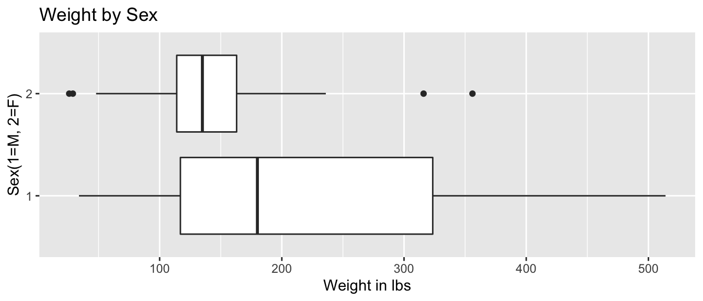
2.7.5 Boxplot of Age and Sex
ggplot(data=Bears_Subset, aes(y=Age, x=Sex)) +
geom_boxplot() +
xlab("Sex(1=M, 2=F)") + ylab("Age in Months") + ggtitle("Age by Sex") + coord_flip()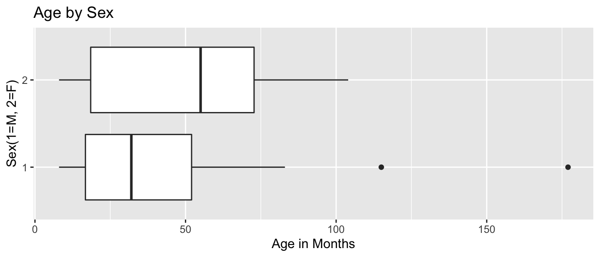
The median age for female bears is older than for male bears. There are 2 male bears that are much older than any others.
2.7.6 Scatterplot of Age and Weight

We see that there is a positive, roughly linear, relationship between age and weight.
We should note that this linear trend is not likely to continue outside the range of our observed ages.
2.7.7 Bears: Age and Sex Model
\(\widehat{\text{Weight}}= b_0+ b_1 \times\text{Age}+ b_2\times\text{I}_{Female}\)
| Sex | Pred. Weight |
|---|---|
| M | \(b_0 + b_1 \times\text{Age}\) |
| F | \((b_0 + b_2) + b_1 \times\text{Age}\) |
Model Assumptions:
- Assumes weight increases linearly with age
- Allows for differences in expected weight for male and female bears of same age
- Assumes male and female bears gain weight at the same rate as they age
2.7.8 Constant Slope Model for Bears

2.7.9 Bears Age and Sex Model Output
Bears_M_Age_Sex <- lm(data=Bears_Subset, Weight ~ Age + Sex)
summary(Bears_M_Age_Sex)##
## Call:
## lm(formula = Weight ~ Age + Sex, data = Bears_Subset)
##
## Residuals:
## Min 1Q Median 3Q Max
## -164.194 -48.483 -3.723 27.766 188.684
##
## Coefficients:
## Estimate Std. Error t value Pr(>|t|)
## (Intercept) 82.6049 16.4019 5.036 0.0000058437067215 ***
## Age 2.9242 0.2914 10.035 0.0000000000000744 ***
## Sex2 -79.8967 20.1416 -3.967 0.00022 ***
## ---
## Signif. codes: 0 '***' 0.001 '**' 0.01 '*' 0.05 '.' 0.1 ' ' 1
##
## Residual standard error: 71.33 on 53 degrees of freedom
## (41 observations deleted due to missingness)
## Multiple R-squared: 0.6679, Adjusted R-squared: 0.6554
## F-statistic: 53.29 on 2 and 53 DF, p-value: 0.00000000000020612.7.10 Predicted Bear Weights from Age and Sex Model
\(\widehat{\text{Weight}}= 82.60 + 2.92 \times\text{Age} - 79.90\times\text{I}_{Female}\)
Suppose Sally and Yogi are 25 month old bears, Sally is a female, Yogi a male.
Sally's Predicted Weight:
\(\widehat{\text{Weight}}= 82.60 + 2.920 \times 25 -78.90\times 1 \approx 75.8 \text{ lbs.}\)
Yogi's Predicted Weight:
\(\widehat{\text{Weight}}= 82.60 + 2.920 \times 25 -78.90\times 0 \approx 155.7 \text{ lbs.}\)
2.7.11 Age and Sex Model for Male and Female Bears
The interaction model allows for different intercepts, but assumes that the average monthly weight increase is the same for male and female bears.
\(\widehat{\text{Weight}}= 82.60 + 2.92 \times\text{Age} - 79.90\times\text{I}_{Female}\)
Male Bears: \[ \widehat{\text{Weight}}= 82.60 + 2.92 \times\text{Age} \]
Female Bears: \[ \widehat{\text{Weight}}= (82.60 -79.90) + (2.92)\times\text{Age} \\ = 2.7+2.92\times Age \]
2.7.12 Bears Predictions with predict
Sex <- factor(c(1, 2))
Age <- c(25, 25)
NewBears <- data.frame(Age, Sex)predict(Bears_M_Age_Sex, newdata=NewBears)## 1 2
## 155.71061 75.813942.7.13 Age and Sex Model Interpretations
For bears of the same sex, weight is expected to increase by 2.92 lbs. each month.
On average, a female bear is expected to weigh 79.90 lbs less than a male bear of the same age.
The intercept \(b_0=82.60\) represents the expected weight of a male bear at birth. We should treat this interpretation with caution, since all bears in the dataset were at least 8 months old.
Approximately 67% of the variation in bear weights is explained by the model using age and sex as explanatory variables.
2.7.14 Bears Age and Sex Model with Interaction
\(\widehat{\text{Weight}}= b_0+ b_1 \times\text{Age}+ b_2\times\text{I}_{Female} + b_3\times\text{Age}\times\text{I}_{Female}\)
| Sex | Pred. Weight |
|---|---|
| M | \(b_0 + b_1 \times\text{Age}\) |
| F | \((b_0 + b_2) + (b_1 + b_3) \times\text{Age}\) |
Model Assumptions:
- Assumes weight increases linearly with age
- Allows for differences in expected weight for male and female bears of same age
- Allows male and female bears to gain weight at different rates as they age
2.7.15 Bears Age and Sex Interaction Model
ggplot(data=Bears_Subset, aes(x=Age, y=Weight, color=Sex)) +
geom_point() + stat_smooth(method="lm", se=FALSE)
2.7.16 Summary for Age-Sex Interaction Model
Bears_M_Age_Sex_Int <- lm(data=Bears_Subset, Weight~ Age*Sex)
summary(Bears_M_Age_Sex_Int)##
## Call:
## lm(formula = Weight ~ Age * Sex, data = Bears_Subset)
##
## Residuals:
## Min 1Q Median 3Q Max
## -207.583 -38.854 -9.574 23.905 174.802
##
## Coefficients:
## Estimate Std. Error t value Pr(>|t|)
## (Intercept) 70.4322 17.7260 3.973 0.000219 ***
## Age 3.2381 0.3435 9.428 0.000000000000765 ***
## Sex2 -31.9574 35.0314 -0.912 0.365848
## Age:Sex2 -1.0350 0.6237 -1.659 0.103037
## ---
## Signif. codes: 0 '***' 0.001 '**' 0.01 '*' 0.05 '.' 0.1 ' ' 1
##
## Residual standard error: 70.18 on 52 degrees of freedom
## (41 observations deleted due to missingness)
## Multiple R-squared: 0.6846, Adjusted R-squared: 0.6664
## F-statistic: 37.62 on 3 and 52 DF, p-value: 0.00000000000045522.7.17 Predictions from Interaction Model for Bears
\(\widehat{\text{Weight}}= 70.43 + 3.24 \times\text{Age}- 31.96\times\text{I}_{Female} -1.04\times\text{Age}\times\text{I}_{Female}\)
Suppose Sally and Yogi are 25 month old bears, Sally is a female, Yogi a male.
Sally's Predicted Weight:
\(\widehat{\text{Weight}}= 70.43+ 3.24 \times 25- 31.96\times1 -1.04\times25\times1 \approx 93.55 \text{ lbs.}\)
Yogi's Predicted Weight:
\(\widehat{\text{Weight}}= 70.43+ 3.24 \times 25- 31.96\times0 -1.04\times25\times0 \approx 151.38 \text{ lbs.}\)
2.7.18 Interaction Model for Male and Female Bears
The interaction model allow for different intercepts and slopes between male and female bears.
\(\widehat{\text{Weight}}= 70.43 + 3.24 \times\text{Age}- 31.96\times\text{I}_{Female} -1.04\times\text{Age}\times\text{I}_{Female}\)
Male Bears: \[ \widehat{\text{Weight}}= 70.43 + 3.24 \times\text{Age} \]
Female Bears: \[ \widehat{\text{Weight}}= (70.43 -31.96) + (3.24 -1.04)\times\text{Age} \\ = 38.46-2.20\times Age \]
2.7.19 Bears Interaction Model Predictions with predict
Sex <- factor(c(1, 2))
Age <- c(25, 25)
NewBears <- data.frame(Age, Sex)predict(Bears_M_Age_Sex_Int, newdata=NewBears)## 1 2
## 151.38566 93.553062.7.20 Interpretations for Age and Sex Model with Interaction
\(\widehat{\text{Weight}}= b_0+ b_1 \times\text{Age}+ b_2\times\text{I}_{Female} + b_3\times\text{Age}\times\text{I}_{Female}\)
| Sex | Pred. Weight |
|---|---|
| M | \(b_0 + b_1 \times\text{Age}\) |
| F | \((b_0 + b_2) + (b_1 + b_3) \times\text{Age}\) |
Interpretations:
\(b_0\): expected weight of a male bear at birth (caution:extrapolation)
\(b_1\): expected weight gain per month for male bears
\(b_2\): expected difference in weight between female and male bears at birth (caution:extrapolation)
\(b_3\): expected difference in monthly weight gain for female bears, compared to male bears
2.7.21 Bears Weight Model Considerations
\(R^2\) increased from 0.67 to 0.68 when the interaction term is added. This is a relatively small increase, so we might question whether the interaction term is needed.
The constant slope model allows us to combine information across sexes to estimate the expected slope. The interaction model treats the two sexes completely separately, thus has less information to use for each estimate.
Which model is preferable is not clear. In addition to the data, we should consider other relevent information. Do experts who study bears believe it is reasonable to assume that male and female bears grow at the same rate per month?
While the models yield drastically different predictions for very young bears, the differences are not as big for bear 8 months or older. Regardless of model we use, we should be careful about making predictions for bears that are younger or older than those that we have data on.
2.7.22 Bears Weight Model Considerations (continued)
Both of these models contain assumptions that are probably unrealistic
Both models assume that bears of the same sex gain weight linearly with age.
A more realistic model might assume that bears gain weight more quickly when they are younger, and that the rate of growth slows once they reach adulthood.
Are there variables not included in the model that might be predictive of a bear's weight?
Of course there is no statistical model that perfectly describes expected weight gain of bears. The question is whether we can find a model that provides an approximation that is reasonable enough to draw conclusions from.
As statistician George Box famously said,
"All models are wrong, but some are useful."
2.8 Interaction Models with Quantitative Variables
2.8.1 2015 Cars Dataset
We consider data from the Kelly Blue Book, pertaining to new cars, released in 2015. We'll investigate the relationship between price, length, and time it takes to accelerate from 0 to 60 mph.
data(Cars2015)
glimpse(Cars2015)## Rows: 110
## Columns: 20
## $ Make <fct> Chevrolet, Hyundai, Kia, Mitsubishi, Nissan, Dodge, Chevrole
## $ Model <fct> Spark, Accent, Rio, Mirage, Versa Note, Dart, Cruze LS, 500L
## $ Type <fct> Hatchback, Hatchback, Sedan, Hatchback, Hatchback, Sedan, Se
## $ LowPrice <dbl> 12.270, 14.745, 13.990, 12.995, 14.180, 16.495, 16.170, 19.3
## $ HighPrice <dbl> 25.560, 17.495, 18.290, 15.395, 17.960, 23.795, 25.660, 24.6
## $ Drive <fct> FWD, FWD, FWD, FWD, FWD, FWD, FWD, FWD, FWD, FWD, FWD, AWD,
## $ CityMPG <int> 30, 28, 28, 37, 31, 23, 24, 24, 28, 30, 27, 27, 25, 27, 30,
## $ HwyMPG <int> 39, 37, 36, 44, 40, 35, 36, 33, 38, 35, 33, 36, 36, 37, 39,
## $ FuelCap <dbl> 9.0, 11.4, 11.3, 9.2, 10.9, 14.2, 15.6, 13.1, 12.4, 11.1, 11
## $ Length <int> 145, 172, 172, 149, 164, 184, 181, 167, 179, 154, 156, 180,
## $ Width <int> 63, 67, 68, 66, 67, 72, 71, 70, 72, 67, 68, 69, 70, 68, 69,
## $ Wheelbase <int> 94, 101, 101, 97, 102, 106, 106, 103, 104, 99, 98, 104, 104,
## $ Height <int> 61, 57, 57, 59, 61, 58, 58, 66, 58, 59, 58, 58, 57, 58, 59,
## $ UTurn <int> 34, 37, 37, 32, 37, 38, 38, 37, 39, 34, 35, 38, 37, 36, 37,
## $ Weight <int> 2345, 2550, 2575, 2085, 2470, 3260, 3140, 3330, 2990, 2385,
## $ Acc030 <dbl> 4.4, 3.7, 3.5, 4.4, 4.0, 3.4, 3.7, 3.9, 3.4, 3.9, 3.9, 3.7,
## $ Acc060 <dbl> 12.8, 10.3, 9.5, 12.1, 10.9, 9.3, 9.8, 9.5, 9.2, 10.8, 11.1,
## $ QtrMile <dbl> 19.4, 17.8, 17.3, 19.0, 18.2, 17.2, 17.6, 17.4, 17.1, 18.3,
## $ PageNum <int> 123, 148, 163, 188, 196, 128, 119, 131, 136, 216, 179, 205,
## $ Size <fct> Small, Small, Small, Small, Small, Small, Small, Small, Smal2.8.2 Car Price and Acceleration Time
LowPrice represents the price of a standard (non-luxury) model of a car. Acc060 represents time it takes to accelerate from 0 to 60 mph.
data(Cars2015)CarsA060 <- ggplot(data=Cars2015, aes(x=Acc060, y=LowPrice)) + geom_point()
CarsA060
2.8.3 Length and Sale Price
ggplot(data=Cars2015, aes(x=Length, y=LowPrice)) + geom_point() + xlab("length in inches")
2.8.4 Relationship between Acc060 and Length
ggplot(data=Cars2015, aes(x=Length, y=Acc060)) + geom_point() 
Lack of correlation among explanatory variables is a good thing. If explanatory variables are highly correlated, then using them together is unlikely to perform much better than using one or the other. In fact, it can cause problems, as we'll see later.
2.8.5 Modeling Price using Acc060
\(\widehat{Price} = b_0 + b_1\times\text{Acc. Time}\)
- Model assumes expected price is a linear function of acceleration time.
Parameter Interpretations:
\(b_0\) represents intercept of regression line, i.e. expected price of a car that can accelerate from 0 to 60 mph in no time. This is not a meaningful interpretation in context.
\(b_1\) represents slope of regression line, i.e. expected change in price for each additional second it takes to accelerate from 0 to 60 mph.
2.8.6 Modeling for Car Price and Acceleration
Cars_M_A060 <- lm(data=Cars2015, LowPrice~Acc060)
summary(Cars_M_A060)##
## Call:
## lm(formula = LowPrice ~ Acc060, data = Cars2015)
##
## Residuals:
## Min 1Q Median 3Q Max
## -29.512 -6.544 -1.265 4.759 27.195
##
## Coefficients:
## Estimate Std. Error t value Pr(>|t|)
## (Intercept) 89.9036 5.0523 17.79 <0.0000000000000002 ***
## Acc060 -7.1933 0.6234 -11.54 <0.0000000000000002 ***
## ---
## Signif. codes: 0 '***' 0.001 '**' 0.01 '*' 0.05 '.' 0.1 ' ' 1
##
## Residual standard error: 10.71 on 108 degrees of freedom
## Multiple R-squared: 0.5521, Adjusted R-squared: 0.548
## F-statistic: 133.1 on 1 and 108 DF, p-value: < 0.000000000000000222.8.7 Price and A060 Regression Line
CarsA060 + stat_smooth(method="lm", se=FALSE)
2.8.8 Acc060 Model Interpretations
\(\widehat{Price} = b_0 + b_1\times\text{Acc. Time}\)
\(\widehat{Price} = 89.90 - 7.193\times\text{Acc. Time}\)
Intercept \(b_0\) might be interpreted as the price of a car that can accelerate from 0 to 60 in no time, but this is not a meaningful interpretation since there are no such cars.
\(b_1=-7.1933\) tells us that on average, the price of a car is expected to decrease by 7.19 thousand dollars for each additional second it takes to accelerate from 0 to 60 mph.
\(R^2 = 0.5521\) tells us that 55% of the variation in price is explained by the linear model using acceleration time as the explanatory variable.
2.8.9 Modeling Price using Acc060 and Length
\(\widehat{Price} = b_0 + b_1\times\text{Acc. Time} + b_2\times\text{Length}\)
Model Assumptions:
Assumes expected price is a linear function of acceleration time and length.
Assumes that expected price increases at same rate with respect to acc. time, for cars of all lengths.
Assumes that expected price increases at same rate with respect to length, for cars of all acceleration times.
2.8.10 Model Using Length and Acceleration Time
Cars_M_A060_L <- lm(data=Cars2015, LowPrice ~ Acc060 + Length)
summary(Cars_M_A060_L)##
## Call:
## lm(formula = LowPrice ~ Acc060 + Length, data = Cars2015)
##
## Residuals:
## Min 1Q Median 3Q Max
## -27.969 -6.625 -1.418 4.934 28.394
##
## Coefficients:
## Estimate Std. Error t value Pr(>|t|)
## (Intercept) 51.83936 18.00737 2.879 0.00482 **
## Acc060 -6.48340 0.69248 -9.363 0.00000000000000141 ***
## Length 0.17316 0.07874 2.199 0.03003 *
## ---
## Signif. codes: 0 '***' 0.001 '**' 0.01 '*' 0.05 '.' 0.1 ' ' 1
##
## Residual standard error: 10.52 on 107 degrees of freedom
## Multiple R-squared: 0.5715, Adjusted R-squared: 0.5635
## F-statistic: 71.36 on 2 and 107 DF, p-value: < 0.000000000000000222.8.11 Regression Plane
\(\widehat{Price} = b_0 + b_1\times\text{Acc. Time} + b_2\times\text{Length}\)
\(\widehat{Price} = 51.83936 + -6.48340\times\text{Acc. Time} + 0.17316\times\text{Length}\)
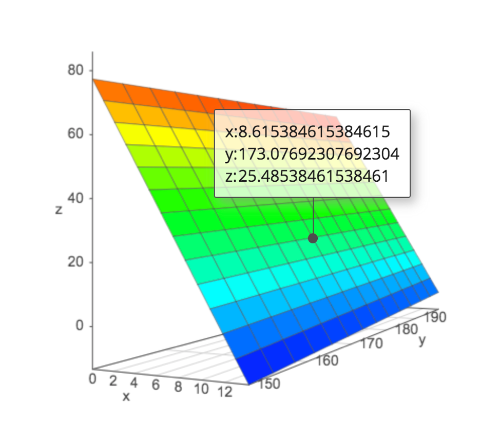
We can further explore the regression plane a academo.org.
2.8.12 Acc060 and Length Model Interpretations
\(\widehat{Price} = b_0 + b_1\times\text{Acc. Time} + b_2\times\text{Length}\)
\(\widehat{Price} = 51.83936 + -6.48340\times\text{Acc. Time} + 0.17316\times\text{Length}\)
Intercept \(b_0\) might be interpreted as the price of a car that can accelerate from 0 to 60 in no time and has length 0, but this is not a meaningful interpretation since there are no such cars.
\(b_1=-6.4834\) tells us that on average, the price of a car is expected to decrease by 6.48 thousand dollars for each additional second it takes to accelerate from 0 to 60 mph., assuming length is held constant.
\(b_2=0.17316\) tells us that on average, the price of a car is expected to increase by 0.173 thousand dollars (or \(173\)) for each additional inch in length, assuming the time it takes to accelerate from 0 to 60 mph. is held constant.
\(R^2 = 0.5715\) tells us that 57% of the variation in price is explained by the linear model using acceleration time and length as the explanatory variables.
2.8.13 Modeling Price using Acc060 and Length with Interaction
\(\widehat{Price} = b_0 + b_1\times\text{Acc. Time} + b_2\times\text{Length}+ b_3\times\text{Acc. Time}\times\text{Length}\)
Model Assumptions:
Assumes expected price is a linear function of acceleration time and length.
Assumes that rate of increase in expected price increases with respect to acc. time differs depending on length of the car.
Assumes that rate of increase in expected price increases with respect to length differs depending on acceleration time of the car.
2.8.14 Predictions using Price, Acc060, Length Model with Interaction
\(\widehat{Price} = b_0 + b_1\times\text{Acc. Time} + b_2\times\text{Length} + b_3\times\text{Acc. Time}\times\text{Length}\)
Predicted Price for 150 inch car:
\[ \begin{aligned} \widehat{Price} & = b_0 + b_1\times\text{Acc. Time} + b_2\times150 + b_3\times\text{Acc. Time}\times150 \\ &= (b_0 + 150b_2) + (b_1+150b_3)\times\text{Acc. Time} \end{aligned} \]
Predicted Price for 200 inch car:
\[ \begin{aligned} \widehat{Price} & = b_0 + b_1\times\text{Acc. Time} + b_2\times 200 + b_3\times\text{Acc. Time}\times 200 \\ &= (b_0 + 200b_2) + (b_1+200b_3)\times\text{Acc. Time} \end{aligned} \]
2.8.15 Interaction Model for Quantitative Variables
We specify an interaction model in R using the * between the explanatory variables.
Cars_M_A060_L_Int <- lm(data=Cars2015, LowPrice ~ Acc060 * Length)
summary(Cars_M_A060_L_Int)##
## Call:
## lm(formula = LowPrice ~ Acc060 * Length, data = Cars2015)
##
## Residuals:
## Min 1Q Median 3Q Max
## -31.0782 -5.2974 -0.6007 4.2479 31.3622
##
## Coefficients:
## Estimate Std. Error t value Pr(>|t|)
## (Intercept) -160.25438 54.11260 -2.961 0.00378 **
## Acc060 19.00490 6.21545 3.058 0.00282 **
## Length 1.34893 0.29447 4.581 0.0000127 ***
## Acc060:Length -0.14260 0.03459 -4.123 0.0000745 ***
## ---
## Signif. codes: 0 '***' 0.001 '**' 0.01 '*' 0.05 '.' 0.1 ' ' 1
##
## Residual standard error: 9.814 on 106 degrees of freedom
## Multiple R-squared: 0.6307, Adjusted R-squared: 0.6203
## F-statistic: 60.35 on 3 and 106 DF, p-value: < 0.000000000000000222.8.16 Cars Interaction Model Interpretations
\(\widehat{Price} = -160.25438 + 19.00490\times\text{Acc. Time} + 1.34893\times\text{Length} - 0.14260\times\text{Acc. Time}\times\text{Length}\)
For a car that is 150 inches long:
\[ \begin{aligned} \widehat{Price} & = -160.25438 + 19.00490\times\text{Acc. Time} + 1.34893\times150 - 0.14260\times\text{Acc. Time}\times150 \\ &= 42.085 -2.385\times\text{Acc. Time} \end{aligned} \]
For a 150 inch car, price is expected to decrease by 2.385 thousand dollars for each additional second it takes to accelerate from 0 to 60 mph.
\[ \begin{aligned} \widehat{Price} & = -160.25438 + 19.00490\times\text{Acc. Time} + 1.34893\times200 - 0.14260\times\text{Acc. Time}\times200 \\ &= 109.532 -9.515\times\text{Acc. Time} \end{aligned} \]
For a 200 inch car, price is expected to decrease by 9.515 thousand dollars for each additional second it takes to accelerate from 0 to 60 mph.
When using an interaction model, we can only interpret coefficients with respect to one variable for a given value of the other variable.
\(R^2=0.6307\) tells us that 63% of variation in car price is explained by the model using length and acceleration time with interaction.
2.8.17 Predicting Car Price Using predict
Predict the price of a 200 inch car that can acclerate from 0 to 60 mph in 8 seconds.
predict(Cars_M_A060_L_Int, newdata=data.frame(Acc060=8, Length=200))## 1
## 33.40344Predict the price of a 150 inch car that can acclerate from 0 to 60 mph in 10 seconds.
predict(Cars_M_A060_L_Int, newdata=data.frame(Acc060=10, Length=150))## 1
## 18.22735
2.5.4 Comments on F-Statistic
The F-statistic measures the amount of variability explained by adding additional variable(s) to the model, relative to the total amount of unexplained variability.
What counts as "large" is depends on \(n, p,\) and \(q\). We will revisit this later in the course.